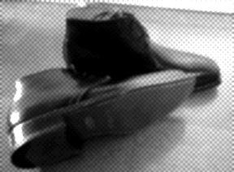

自己紹介へ
9月24日、日曜日に靴を買いました。(この日は、シドニーオリンピック女子マラソンで、みごと金メダルをとった日。) 初めて自分でじっくり選んで買った革靴です。ちょっとうれしくて、ここで買った靴を公開！
メーカーはHARRIS。イタリアのメーカーらしい。うーん、聞いた事ないな。日本では、それほど知られてないメーカーか、それとも僕が知らないだけか。靴の裏には「MADE IN ITALY」の文字、「HARRIS 1913」と書いてある金属の小さなプレートみたいのがついていて、ちょっと良い気分。